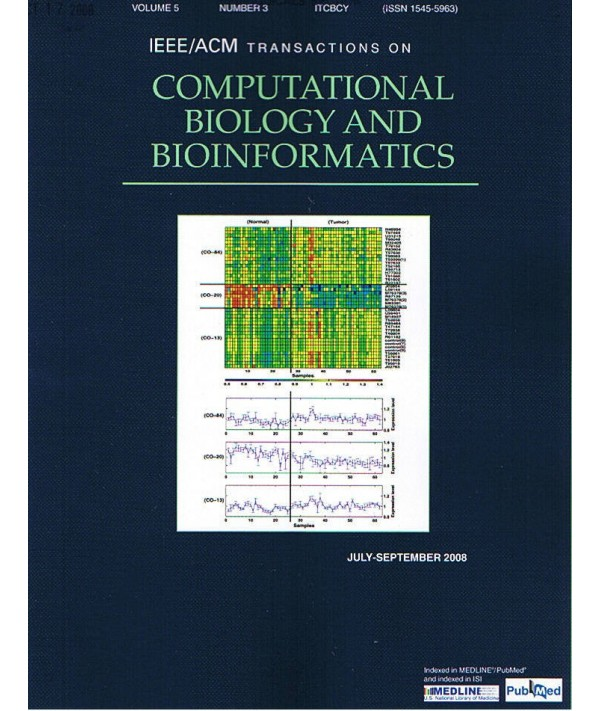
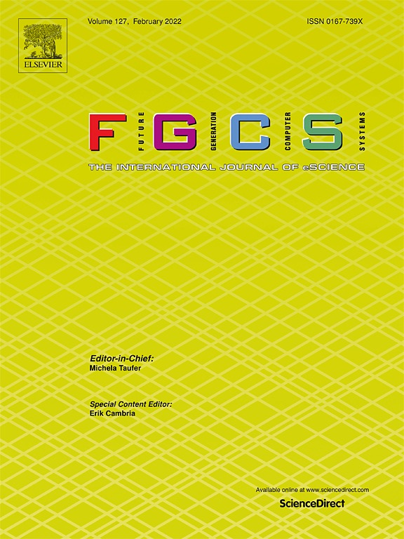

Welcome
Invitation letter (邀请函)(click to download pdf if needed)
Nov.09, 2021
Instructions on epidemic prevention and control for on-site registration/attendance of the ISBRA2021:
1) On-site registration will start from Nov. 25th. Participants holding green codes for 14-day itinerary can register normally.
2) Participants holding green codes with *( coming from a medium-high risk area) must have a COVID19 test report within 48 hours before the on-site registration.
3) Yellow/red itinerary codes are not accepted for on-site registration.
4) Registered guests who do not meet the requirements for on-site participation, please change to online participation (Method 1: Tencent meeting(recommended); Method 2: If Tencent meeting is not available, please record the report video and send it to Mr. Junyu, Chen: chenjy@siat.ac.cn);
5) For on-line participants who have paid the on-site registration fee, the conference will refund the difference between on-line and on-site registration fees with 5 days after the conference. Please contact Ms. Yang Du (yang.du@siat.ac.cn) if you have any further questions about the refund policy.
Notes: The specific requirements are subject to the epidemic prevention policy and may change at any time.
ISBRA2021会议11月09日参会提醒（疫情防控须知）：
1) 大会11月25日开始现场注册，14天行程码为绿码，可正常报到；
2) 14天行程码为绿码，但是带有*号，里面标注的地方是经过中高风险地区的，需要持有48小时内核酸报告，方可报到；
3) 除绿码外的其他颜色行程码概不接受报到。
4）不符合现场参会要求的注册嘉宾，请改为线上方式参加（方式1: 优先腾讯会议方式；方式2: 若无法采用腾讯会议线上报告，可以采用录制视频方式，发给工作人员陈俊宇, chenjy@siat.ac.cn）；
5) 对线下参会改为线上参会的嘉宾，如已缴纳现场注册费用，会务组在大会结束后3-5天内按照线下-线下注册费差额退还给嘉宾，请嘉宾联系会务组杜洋(yang.du@siat.ac.cn)。给您带来的不便，还请您谅解！
备注：具体要求根据深圳市防疫政策调整，出行（进入）防疫政策会动态更新,详情以深圳市出行防疫政策网站为准(https://www.gd.gov.cn/gdywdt/zwzt/yqfkzccs/dszc/content/post_3496930.html)
进入当地政策：
1.高风险地区来（返）深人员，红码人员。实施14天集中隔离，核酸检测前七天每一检，第10、14天开展核酸检测。包括：黑龙江黑河市爱辉区鹿源春社区宏志小区、张地营子乡泡子沿村、热电社区阳光家园小区；河北石家庄市深泽县河庄村、辛集市小辛庄小章北宋片区；四川成都市成华区理工东苑西；辽宁大连市庄河市新华街道小寺社区、昌盛街道张屯社区。
2.中风险地区来（返）深人员，曾有核酸阳性工作人员登机保洁的航班乘客、机组及保障人员。实施14天居家隔离，第1、3、7、14天开展核酸检测。包括：北京海淀区1个地区；宁夏银川市2个地区；辽宁大连市45个地区；云南德宏4个地区；黑龙江黑河市爱辉区；江西上饶市3个地区；重庆渝北区2个地区，长寿区1个地区；河北石家庄市1个地区；河南郑州市7个地区，周口市1个地区；四川成都市9个地区；内蒙古阿拉善盟。
3.高风险所在县（区）来（返）深人员。实施7天居家隔离+7天居家健康监测，第1、3、7、14天开展核酸检测。包括：黑龙江黑河（不含爱辉区），河北石家庄深泽县、辛集市；四川成都成华区；辽宁大连。
4.输入风险高的地市来（返）深人员，外地隔离期满来（返）深人员。国内客运交通场站工作人员出现阳性感染者的交通场站来（返）深旅（返）深旅客。实施14天居家健康监测，核酸检测前七天三检，第14天开展核酸检测。包括：河北石家庄（不含深泽县）；江西上饶；河南郑州；四川成都（不含成华区）；北京昌平区、海淀区。
5.其它有本地病例报告且本地病例零报告未满14天的地市来（返）深人员，重点关注城市。实施“四个一”健康管理和14天自我健康监测。包括：新疆；北京各区（不含昌平区、海淀区）；云南德宏；四川自贡；黑龙江哈尔滨；重庆；江苏常州；河南周口；吉林省吉林市；青海西宁；宁夏银川；内蒙古锡林郭勒盟；甘肃兰州、天水。
6.香港来（返）深入境人员，实施7天集中隔离+7天居家隔离+7天居家健康监测。澳门来（返）深入境人员，需持7天内核酸检测阴性证明。除香港、澳门以外的境外来（返）深人员，实施14天集中隔离+7天严格居家健康监测。
7.国内中高风险地区和有阳性病例报告的地区来深航班、火车和长途客车旅客，需持48小时内核酸检测阴性证明登机（上车），同时接受落地核酸检测。
出行交通政策：
民航
所有进站旅客落实三个100%（100%测温、100%健康码亮绿码通行、100%佩戴口罩）。国内中高风险地区和有阳性病例报告的地区来深航班旅客需持48小时内核酸检测阴性证明登机，同时接受落地核酸检测，采样完成即可离开。建议旅客尽量选乘非公共交通工具离开机场，返回居住地等候核酸检测结果。
铁路
所有进站旅客落实三个100%（100%测温、100%健康码亮绿码通行、100%佩戴口罩）。国内中高风险地区和有阳性病例报告的地区来深火车旅客，需持48小时内核酸检测阴性证明上车，同时接受落地核酸检测。
公路
所有进站旅客落实三个100%（100%测温、100%健康码亮绿码通行、100%佩戴口罩）。国内中高风险地区和有阳性病例报告的地区来深长途客车旅客，需持48小时内核酸检测阴性证明上车，同时接受落地核酸检测。
水路
所有进站旅客落实三个100%（100%测温、100%健康码亮绿码通行、100%佩戴口罩）。
The International Symposium on Bioinformatics Research and Applications (ISBRA) provides a forum for the exchange of ideas and results among researchers, developers, and practitioners working on all aspects of bioinformatics and computational biology and their applications. Submissions presenting original research are solicited in all areas of bioinformatics and computational biology, including the development of experimental or commercial systems. Topics of interest include but are not limited to
| Biomarker discovery | High-performance bio-computing |
| Biomedical databases and data integration | Metagenomics |
| Biomedical text mining and ortologies | Molecular evolution |
| Biomolecular imaging | Molecular modelling and simulation |
| Comparative genomics | Next-generation sequencing data analysis |
| Computational genetic epidemiology | Pattern discovery and classification |
| Computational proteomics | Population genetics |
| Data mining and visualization | Software tools and applications |
| Gene expression analysis | Structural biology |
| Genome analysis | AI and machine learning methods in Bioinformatics and Medical Information |
| Systems biology | Big Data Analytics in Biology and Medicine |
All papers accepted in ISBRA2021 will be published in the Springer Lecture Notes in Computer Science Volume (EI index).
Extended versions of selected papers from the conference will be published in the special issues of
- IEEE/ACM Transactions on Computational Biology and Bioinformatics
- Future Generation Computer Systems
- Journal of Computational Biology
- BMC Bioinformatics
- BMC Genomics
- Tsinghua Science and Technology (SCI indexed)



